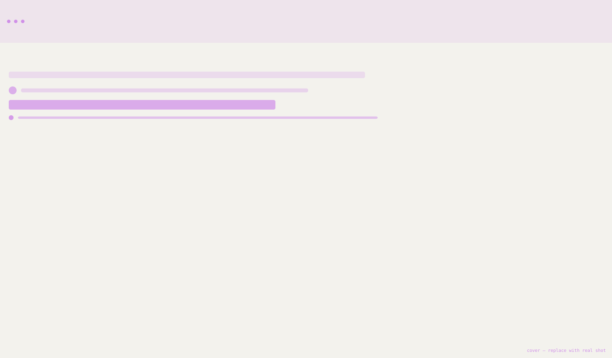
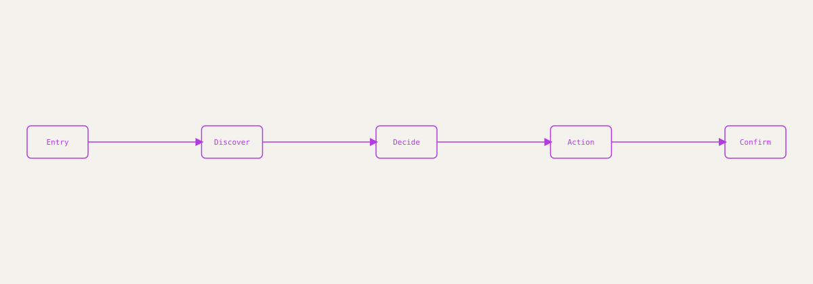
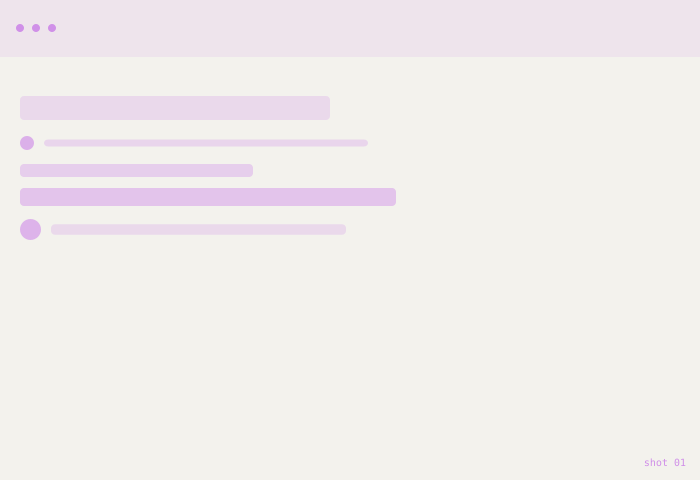
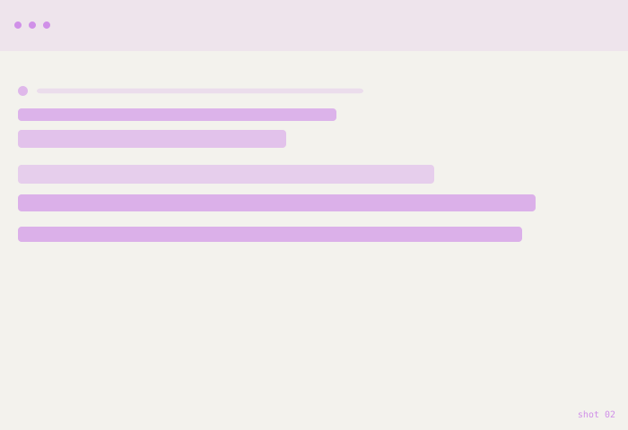
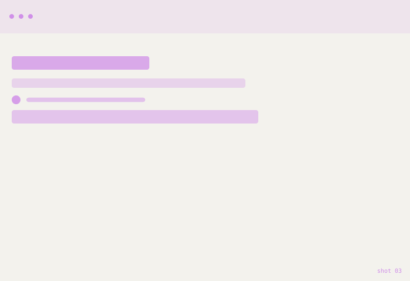
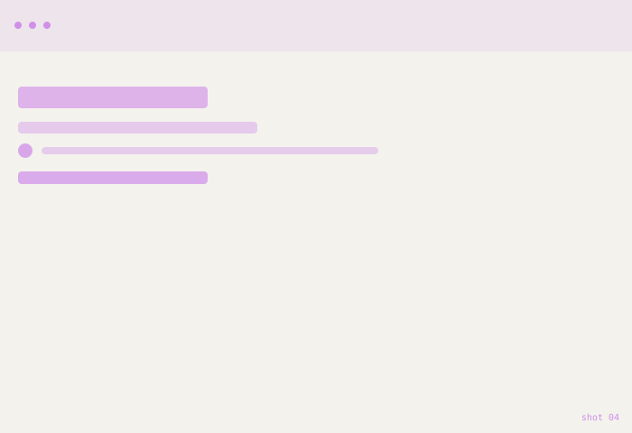

Bazaaro
A mobile marketplace redesign focused on one problem: too many shoppers were filling their cart and never finishing checkout.

The problem
Checkout had grown to six screens over time, with shipping, payment, and promo codes each bolted on separately. Cart‑to‑purchase drop‑off was high, and support saw repeat complaints about the process.
Replace this paragraph with your real problem statement — what was broken, for whom, and how you knew it (interviews, support tickets, analytics, etc.).
UX approach
I mapped the full checkout flow screen by screen to find exactly where shoppers hesitated, backtracked, or abandoned the cart.
- Mapped the existing 6‑screen checkout flow end‑to‑end
- Reviewed session recordings and support tickets for drop‑off points
- Combined shipping, payment, and review into fewer, clearer steps
- Prototyped the shortened flow and tested it with 5 shoppers
- Refined copy and error states based on where people got stuck
From cart to confirmation
The new flow cuts checkout from six screens to three, keeping order progress visible and pushing optional steps (like promo codes) out of the critical path.

Replace this diagram with your real user‑flow export from Figma or FigJam.
Result & learnings
Describe the outcome here — what changed for the user, what you'd measure (completion rate, time‑to‑order, support tickets), and one or two things you'd do differently next time.
Shots
Replace these with real screenshots from Figma or your shipped product.



